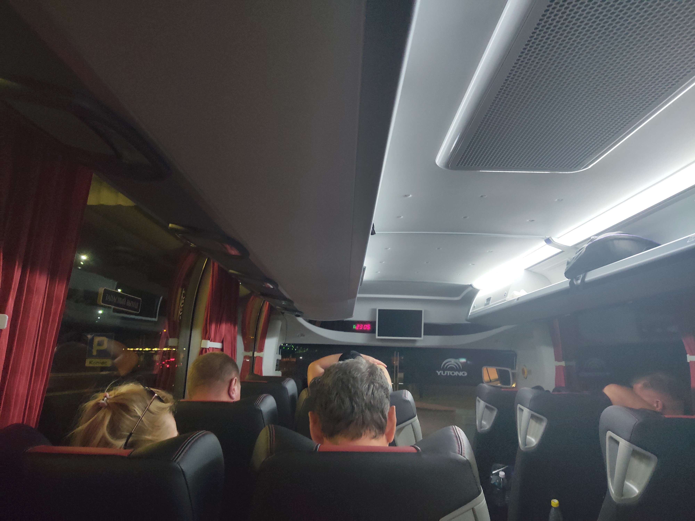
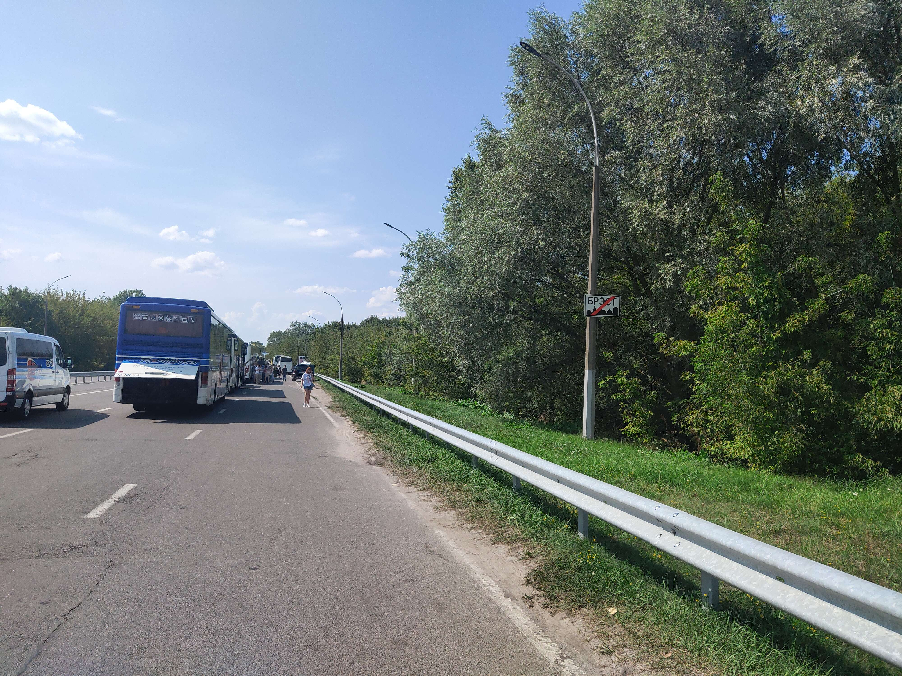
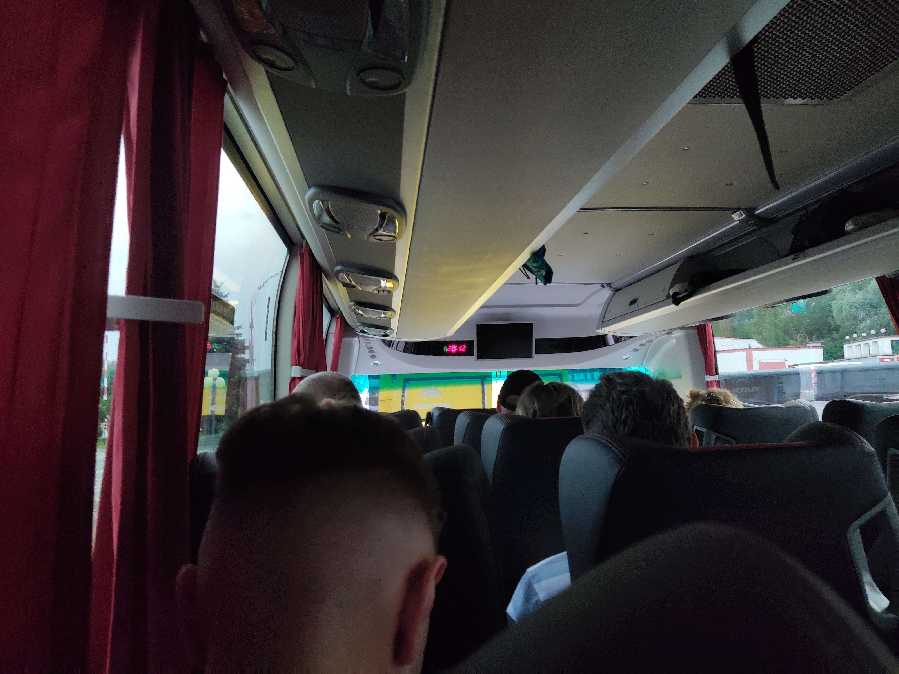
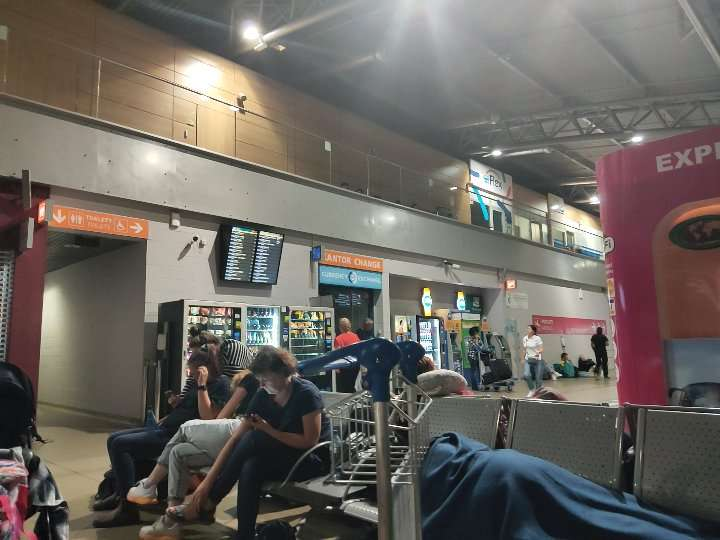
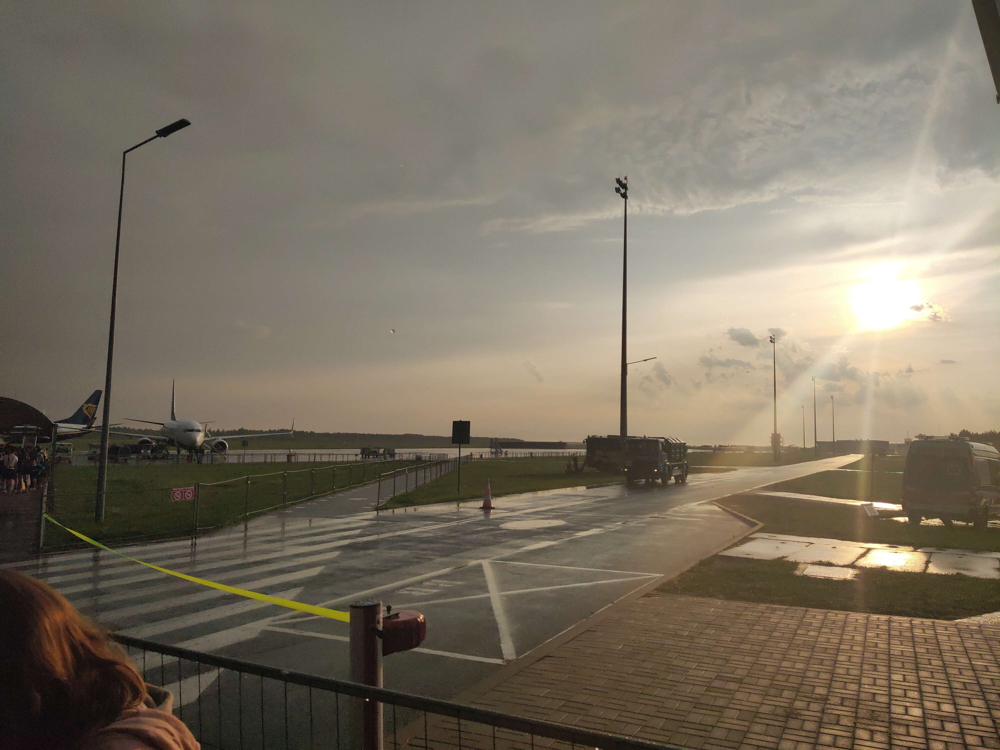
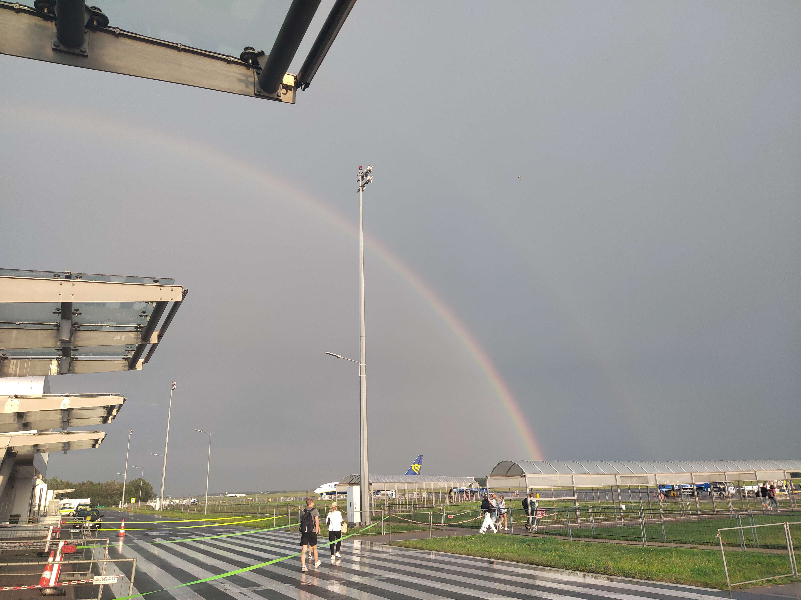
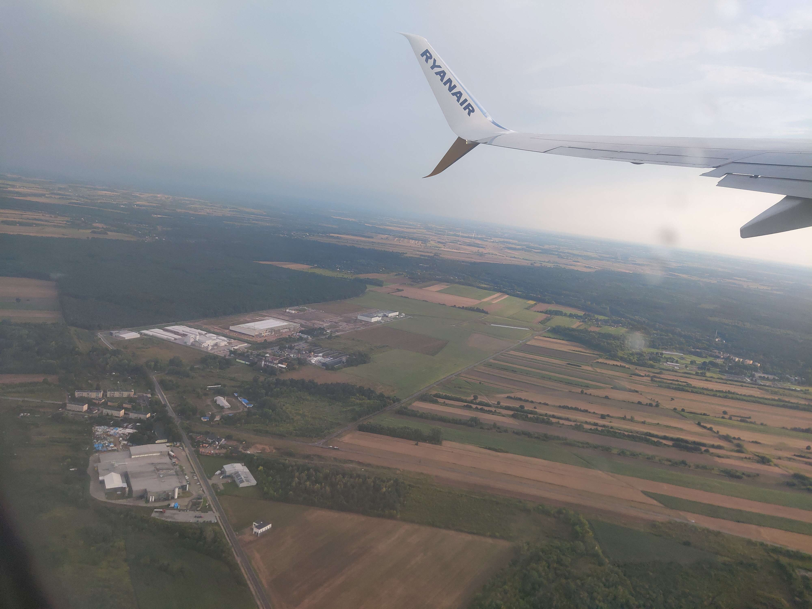
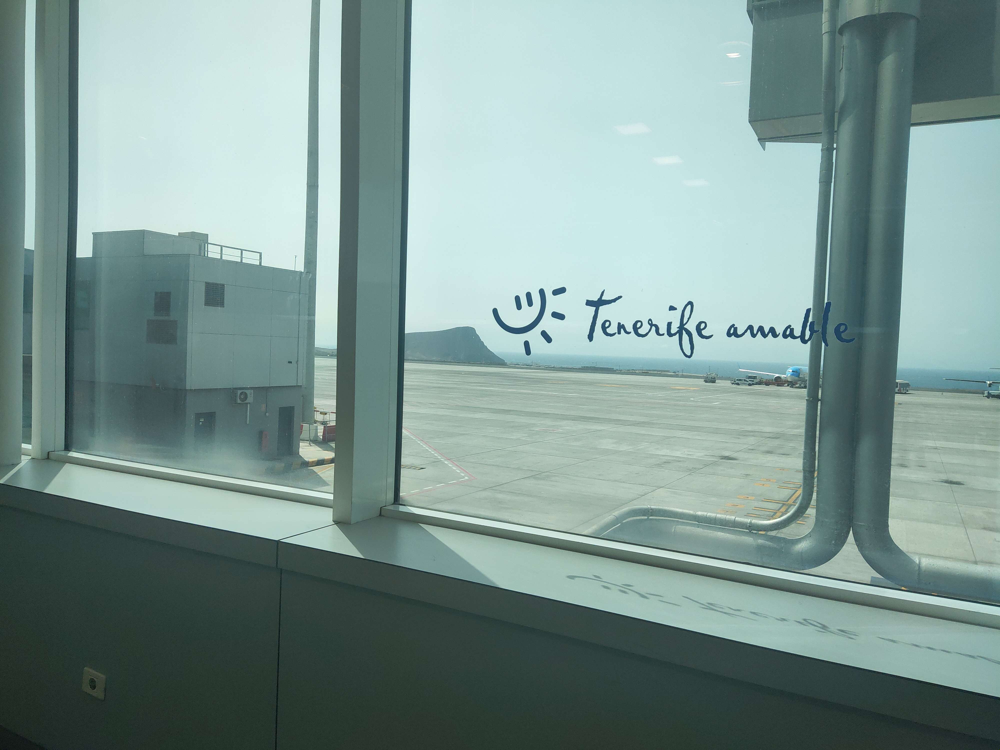
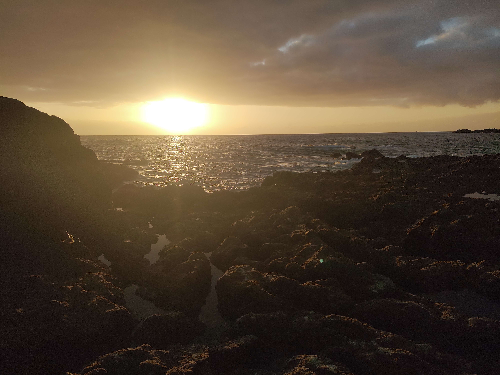

История переезда в Испанию
Время: 05:50, подъем. Это был последний завтрак в Беларуси. В 6:40 за нами подъехал мой дедушка на машине и отвез нас к автовокзалу в центр Минска. Автобус за нами прибыл в 07:20, он сдедовал до нашего аэропорта через польскую границу. Мы на него сели и поехали...

До польской границы мы ехали 4 часа с одной остановкой. Казалось бы, самое страшное позади... еще пару часиков и мы в аэропорте... Но нет. Мы стали на границе.

На белорусской границе мы стояли около 8 часов из-за того, что перед нами стояло еще 20 АВТОБУСОВ. Температура на улице была 35 градусов в самый нужный момент! Ни в автобусе, ни на улице находиться было невозможно, ходили на стоящую рядом заправку за мороженым, чтобы хоть как-то спастись.
Ну а на польской же границе мы стояли только 4 часа, там уже пошел приятный дождик, там все попроще.

Ну вот и все, граница пройдена, время 23:25. Мы поехали по польской магистрале в Варшаву в аэропорт, это было классное ощущение на улице дождик с грозой.. ночь.. все спали.. Спалось бы крепко, если бы не водитель, который со скорости примерно 80 км/ч резко тормознул на светофоре, из-за чего чуть не вырвало.
Приехали в аэропорт в 3 часа ночи, самолет наш был в 8 часов, а регистрация багажа в 6. Все спали в аэропорту, но мне спать нельзя было, но очень хотелось, в итоге случайно заснул в 5:50, поспал только 15 минут и проснувшись мне настолько было плохо, после этого хотелось ни спать, ни ходить, ни в телефоне сидеть, но все же пришлось регистрировать багаж.

После регистрации багажа ждали еще 40 минут, опять же спать нельзя было, стояли и засыпали, так как не спали почти 2 ночи.

И вот.. наш самолет прибыл, надо идти садиться на него, на улице была прекрасная погода, моросил мелкий дождик, большая радуга, слегка прохладно.


Лететь надо было 6 часов, по итогу эта была самая ужасная ночь, мы начали засыпать, но не могли полноценно поспать из-за постоянного перепада давления в самолете, засыпали по 10 минут и просыпались.

Дотерпели 6 часов без задержек и наконец-то прилетели на остров Тенерифе. Мы пошли заселяться и легли спать...
Вот и подошел конец истории... Мы начали новую жизнь в Испании, вспоминать этот момент поездки и самые первые дни на острове мы будем долго...
